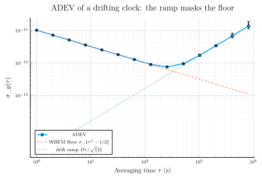
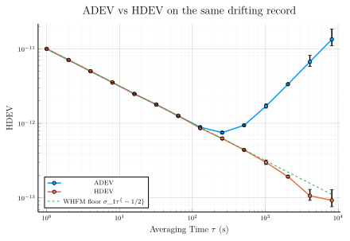
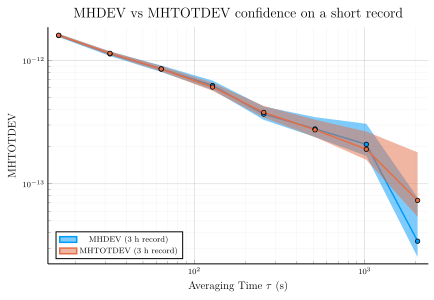

Characterizing a drifting clock with the Hadamard family
A rubidium standard or GPSDO in its first weeks after power-on has linear frequency drift on top of its white-FM noise floor — the physics package is still settling toward thermal equilibrium. Drift at the 1e-10-per-day level is common in early life. On a record like this, ADEV reports the drift, not the clock: the deterministic ramp swamps the random noise at long τ. The Hadamard family exists for exactly this record.
This tutorial:
- Synthesises one day of 1 Hz data — calibrated WHFM noise plus an explicit linear frequency drift.
- Runs
adevand shows the drift ramp masking the noise floor. - Runs
hdevand shows the third difference removing the drift. - Introduces
mhdevandhtdev— the time-deviation analog, original to this package. - Truncates to a three-hour record and compares
mhdevagainstmhtotdevdegrees of freedom and confidence intervals at long τ. - Closes with a summary of which estimator to reach for.
using SigmaTau
using RandomOne day of a drifting clock
noise_gen synthesises a calibrated power-law mixture; here a single component, white frequency modulation (α = 0) at σy(1 s) = 1e-11 — a typical rubidium / GPSDO class. `noisegenhas no drift parameter, because deterministic drift is not noise: we add the termD \, t` to the fractional-frequency series by hand.
Random.seed!(20260609)
τ₀ = 1.0 # 1 Hz sampling
N = 86_400 # one day of data
σ1 = 1.0e-11 # WHFM level: σ_y(τ = 1 s)
D = 2.0e-10 / 86_400 # drift rate, 2e-10 per day, in 1/s
fd_noise = noise_gen(FrequencyData, N, τ₀; sigma1 = Dict(0 => σ1))
t = (0:N-1) .* τ₀
y = fd_noise.y .+ D .* t # drift injected explicitly
fd = FrequencyData(y, τ₀)FrequencyData{Float64}(86400 samples, τ₀=1 s)A common octave τ-grid for every estimator in this tutorial, from 1 s out to 8192 s (≈ 2.3 h):
m_values = [2^k for k in 0:13]
taus = m_values .* τ₀14-element Vector{Float64}:
1.0
2.0
4.0
8.0
16.0
32.0
64.0
128.0
256.0
512.0
1024.0
2048.0
4096.0
8192.0ADEV: the drift ramp
For a pure linear frequency drift, the Allan deviation is
\[\sigma_y(\tau) \;=\; \frac{D\,\tau}{\sqrt{2}},\]
where $D$ is the drift rate in fractional frequency per second and $\tau$ the averaging time. The second difference of phase does not annihilate a term linear in $t$ in $y(t)$; it passes it through as a residual proportional to $\tau$, so the drift appears as a rising τ⁺¹ ramp. The ramp crosses the WHFM floor $\sigma_1 \tau^{-1/2}$ where the two terms are equal:
τ_cross = (sqrt(2) * σ1 / D)^(2 / 3)
println("drift overtakes the WHFM floor near τ ≈ ", round(τ_cross; digits = 1), " s")drift overtakes the WHFM floor near τ ≈ 334.2 sr_adev = adev(fd, m_values)
using Plots
plot(r_adev;
label = "ADEV",
xlabel = raw"Averaging time \(\tau\) (s)",
ylabel = raw"\(\sigma_y(\tau)\)",
title = "ADEV of a drifting clock: the ramp masks the floor",
legend = :bottomleft,
lw = 1.5)
plot!(taus, σ1 ./ sqrt.(taus); ls = :dash, label = raw"WHFM floor \(\sigma_1\tau^{-1/2}\)")
plot!(taus, D .* taus ./ sqrt(2); ls = :dot, label = raw"drift ramp \(D\tau/\sqrt{2}\)")
Past the crossover the curve tracks the drift line, not the clock's noise. Stable32 users handle this by detrending first (the Drift function) and re-running; the Hadamard family makes that step unnecessary.
HDEV: the third difference removes the drift
hdev replaces ADEV's second difference of phase with a third difference. A linear term in $y(t)$ is quadratic in phase, and a third difference annihilates any quadratic — so constant frequency drift contributes exactly zero, with no detrending pass over the data. See the Allan-family theory page for the kernel definition.
r_hdev = hdev(fd, m_values)
plot(r_adev;
label = "ADEV",
xlabel = raw"Averaging time \(\tau\) (s)",
ylabel = raw"\(\sigma_y(\tau)\)",
title = "ADEV vs HDEV on the same drifting record",
legend = :bottomleft,
lw = 1.5)
plot!(r_hdev; label = "HDEV", lw = 1.5)
plot!(taus, σ1 ./ sqrt.(taus); ls = :dash, label = raw"WHFM floor \(\sigma_1\tau^{-1/2}\)")
HDEV follows the true τ⁻¹/² noise floor across the whole grid. The clock under the drift is recovered without touching the data.
MHDEV and HTDEV
mhdev adds an m-point phase average inside the third-difference window, exactly as MDEV does inside ADEV's. The averaging changes the WPM slope from −1 to −3/2 while leaving FPM at −1, so MHDEV distinguishes white-PM from flicker-PM where HDEV (like ADEV) cannot — and it keeps the third difference's drift immunity. On this WHFM-dominated record MHDEV simply parallels HDEV; its value shows on records where a drifting clock also has short-τ PM noise of ambiguous color.
r_mhdev = mhdev(fd, m_values)StabilityResult(:mhdev, 14 pts, τ∈[1, 8192] s, with CI)
tau dev neff ci_lo ci_hi edf noise
1 9.999e-12 86397 9.968e-12 1.003e-11 5.266e+04 WHFM
2 5.412e-12 86393 5.392e-12 5.433e-12 3.607e+04 WHFM
4 3.472e-12 86385 3.454e-12 3.49e-12 1.823e+04 WHFM
8 2.374e-12 86369 2.357e-12 2.392e-12 9119 WHFM
16 1.654e-12 86337 1.636e-12 1.671e-12 4558 WHFM
32 1.198e-12 86273 1.18e-12 1.216e-12 2278 WHFM
64 8.358e-13 86145 8.188e-13 8.539e-13 1138 WHFM
128 5.625e-13 85889 5.465e-13 5.799e-13 567.4 WHFM
256 4.22e-13 85377 4.053e-13 4.41e-13 282.3 WHFM
512 2.836e-13 84353 2.683e-13 3.018e-13 145 FLPM
1024 1.99e-13 82305 1.84e-13 2.185e-13 68.5 WHFM
… 14 rows totalhtdev is the time-deviation analog: it rescales MHDEV by
\[\sigma_{x,\mathrm{HT}}(\tau) \;=\; \frac{\tau}{\sqrt{10/3}}\,\sigma_{y,\mathrm{MH}}(\tau),\]
where $\sigma_{y,\mathrm{MH}}$ is MHDEV; HTDEV has units of seconds (it is a σx quantity). HTDEV is to MHDEV what TDEV is to MDEV — a time-error summary built on the drift-immune third-difference kernel — and it is original to this package: SP1065, IEEE 1139-2022, and NBS-TN-1337 do not define it (see [the HTDEV section of the theory page](../theory/allanfamily.md)).
r_htdev = htdev(fd, m_values)
println("HTDEV is the τ/√(10/3) rescale of MHDEV — max deviation from the identity: ",
maximum(abs.(r_htdev.dev .- r_mhdev.dev .* r_mhdev.tau ./ sqrt(10 / 3))))HTDEV is the τ/√(10/3) rescale of MHDEV — max deviation from the identity: 2.5849394142282115e-26A few rows of the time-error budget for this clock, drift excluded by construction:
for i in (1, 5, 9, 13)
println("τ = ", lpad(round(Int, r_htdev.tau[i]), 5), " s σ_x = ",
round(r_htdev.dev[i]; sigdigits = 3), " s")
endτ = 1 s σ_x = 5.48e-12 s
τ = 16 s σ_x = 1.45e-11 s
τ = 256 s σ_x = 5.92e-11 s
τ = 4096 s σ_x = 1.42e-10 sShort records: MHTOTDEV
One day was generous. Suppose the record stops after three hours — a warm-up check before a deployment, say. At the longest reachable τ, mhdev has very few independent third differences left, so its χ² confidence interval is wide. mhtotdev extends each analysis subsegment by detrended reflection (the Greenhall total-variance methodology), keeping every subsegment in play at long τ and raising the equivalent degrees of freedom. Both its bias correction (correct_bias = true by default) and its EDF model are Monte-Carlo-calibrated against synthesized known-noise — MHTOTDEV is original to this package and has no published coefficient tables — and that calibration is valid only for τ/τ₀ ≥ 16, the same floor the Hadamard-total literature quotes. See the total-family theory page and MHTOTDEV bias and EDF for the methodology.
Unlike its parent mhdev, the total kernel is not drift-immune on its own — the boundary extension re-admits residual drift — so mhtotdev removes the record's least-squares frequency drift itself before analyzing (remove_drift = true, the default; per-window drift removal was evaluated in both the phase and frequency domains and measurably damages the statistic, so the global removal is the design). Since drift is deterministic, removing it discards no statistical information; it is the same practice SP1065 recommends before any total estimator. One piece of hygiene remains for the comparison below: mhdev's noise identification runs on the record as given and would classify the longest-τ points as redder than the true noise on a record drifting this strongly. Detrending the record once lets both estimators' χ² intervals classify the underlying noise:
N_short = 10_800 # three hours at 1 Hz
fd_short = detrend(FrequencyData(y[1:N_short], τ₀)) # noise-ID hygiene for the mhdev comparison
m_short = [16, 32, 64, 128, 256, 512, 1024, 2048] # all ≥ the τ/τ₀ ≥ 16 floor
r_mh = mhdev(fd_short, m_short)
r_mht = mhtotdev(fd_short, m_short)StabilityResult(:mhtotdev, 8 pts, τ∈[16, 2048] s, with CI)
tau dev neff ci_lo ci_hi edf noise
16 1.603e-12 10737 1.563e-12 1.646e-12 747.2 WHFM
32 1.144e-12 10673 1.104e-12 1.188e-12 371.6 WHFM
64 8.543e-13 10545 8.13e-13 9.026e-13 183.9 WHFM
128 6.094e-13 10289 5.686e-13 6.604e-13 89.97 WHFM
256 3.794e-13 9777 3.443e-13 4.279e-13 43.03 WHFM
512 2.741e-13 8753 2.391e-13 3.311e-13 19.55 WHFM
1024 1.907e-13 6705 1.565e-13 2.654e-13 7.816 WHFM
2048 7.332e-14 2609 5.392e-14 1.799e-13 1.948 WHFMThe octave-by-octave comparison, with the default 68.3% (1σ) confidence level:
ci_width(r, i) = (r.ci[i].hi - r.ci[i].lo) / r.dev[i]
println("τ (s) T/τ edf mhdev edf mhtotdev rel CI mhdev rel CI mhtotdev")
for i in eachindex(m_short)
Ttau = (N_short - 1) * τ₀ / r_mh.tau[i]
println(lpad(round(Int, r_mh.tau[i]), 5), " ",
lpad(round(Ttau; digits = 1), 6), " ",
lpad(round(r_mh.edf[i]; digits = 1), 9), " ",
lpad(round(r_mht.edf[i]; digits = 1), 12), " ",
lpad(round(ci_width(r_mh, i); digits = 2), 12), " ",
lpad(round(ci_width(r_mht, i); digits = 2), 15))
endτ (s) T/τ edf mhdev edf mhtotdev rel CI mhdev rel CI mhtotdev
16 674.9 567.4 747.2 0.06 0.05
32 337.5 282.3 371.6 0.08 0.07
64 168.7 139.8 183.9 0.12 0.1
128 84.4 68.5 90.0 0.17 0.15
256 42.2 32.9 43.0 0.25 0.22
512 21.1 15.1 19.6 0.39 0.34
1024 10.5 6.2 7.8 0.66 0.57
2048 5.3 2.2 1.9 1.51 1.72Read the table from the bottom up. From τ = 16 s through τ = 1024 s the extension raises the equivalent degrees of freedom by a steady ≈ 30 % and tightens the relative confidence interval accordingly. The gain collapses only at the kernel's reach limit (mhtotdev needs at least one subsegment, N − 4m + 1 ≥ 1, so τ cannot exceed T/4, where T is the record duration): at the last octave both estimators are down to an EDF of 2–3, and no extension trick manufactures much independent information that close to the record length. The relative gain is uniform, but it buys the most where the unextended interval is widest — the last usable decade, which is exactly where a warm-up check needs its answer. Plotted with CI bands:
plot(r_mh;
label = "MHDEV (3 h record)",
ci_band = true,
xlabel = raw"Averaging time \(\tau\) (s)",
ylabel = raw"\(\sigma_y(\tau)\)",
title = "MHDEV vs MHTOTDEV confidence on a short record",
legend = :bottomleft,
lw = 1.5)
plot!(r_mht; label = "MHTOTDEV (3 h record)", ci_band = true, lw = 1.5)
Which estimator, when
All four Hadamard-family estimators reject linear frequency drift. Within the family:
println("""
Symptom Reach for
--------------------------------------------------- ---------
drift contaminates ADEV at long τ hdev
drift + ambiguous PM noise (WPM vs FPM) at short τ mhdev
time-error budget (σ_x) for a drifting clock htdev
drifting clock, record too short for long-τ CI mhtotdev
""")Symptom Reach for
--------------------------------------------------- ---------
drift contaminates ADEV at long τ hdev
drift + ambiguous PM noise (WPM vs FPM) at short τ mhdev
time-error budget (σ_x) for a drifting clock htdev
drifting clock, record too short for long-τ CI mhtotdev| Symptom | Reach for |
|---|---|
| Drift contaminates ADEV at long τ | hdev |
| Drift plus ambiguous PM noise (WPM vs FPM) at short τ | mhdev |
| Time-error budget (σ_x) for a drifting clock | htdev |
| Drifting clock on a record too short for long-τ confidence | mhtotdev |
For records without drift the Allan-family counterparts (adev, mdev, tdev, mtotdev) are slightly more efficient — tighter CI per τ on the same record — so the Hadamard family is the tool for the drifting clock, not the default for every clock.